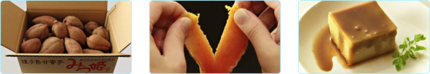

日本で最初にさつまいもの栽培が行われたという種子島は、ミネラルを豊富に含んだ土壌と、高い山がなく太陽にも恵まれ、美味しいさつまいもを育てるのにとても適した土地です。Wiiの間で販売されている「みつ姫」は、そんな種子島産の「安納芋」という種類のさつまいもです。
糖度は通常のさつまいもの約2倍の40度（！）と甘い蜜がたっぷりで、半分に割ってみると中はオレンジ色。焼き芋にすると、さらにキレイな黄金色になります。普通のさつまいものようにすぐには出荷せず、出荷まで1カ月以上も寝かせて熟成させ、さらに糖度を上げているのも特徴です。
Wiiの間では、「みつ姫」を使った焼き芋はもちろん、干し芋やプリンケーキなど、関連商品も取り扱っています。12月からいよいよ販売開始！
